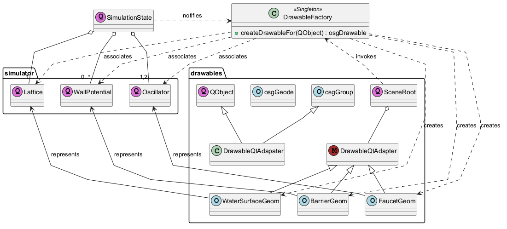

@startuml
skinparam linetype polyline
!define QO (Q,orchid)
!define QW (W,orange)
!define OSG (O,lightblue)
!define Mixin (M, brown)
!pragma defaultLabeldistance 2.1
!pragma defaultLabelangle 30
class DrawableFactory << Singleton >>
DrawableFactory : +createDrawableFor(QObject) : osgDrawable
package drawables {
class osgGroup << OSG >>
class SceneRoot << QO >>
'-------------------------------------------------------------
class osgGeode << OSG >>
class QObject << QO >>
class DrawableQtAdapter << Mixin >>
osgGroup <|-- DrawableQtAdapater
QObject <|-- DrawableQtAdapater
class WaterSurfaceGeom << OSG >>
DrawableQtAdapter <|-- WaterSurfaceGeom
class BarrierGeom << OSG >>
DrawableQtAdapter <|-- BarrierGeom
class FaucetGeom << OSG >>
DrawableQtAdapter <|-- FaucetGeom
}
class SimulationState << QO >>
package simulator {
class Oscillator << QO >>
class WallPotential << QO >>
class Lattice << QO >>
SimulationState o-- "0..*" WallPotential
SimulationState o-- "1" Lattice
SimulationState o-- "1,2" Oscillator
}
SceneRoot ..> DrawableFactory : invokes
SceneRoot o-- DrawableQtAdapter
Lattice <--- WaterSurfaceGeom : represents
WallPotential <--- BarrierGeom : represents
Oscillator <--- FaucetGeom : represents
DrawableFactory ..> FaucetGeom : creates
DrawableFactory ..> BarrierGeom : creates
DrawableFactory ..> WaterSurfaceGeom : creates
DrawableFactory ..> WallPotential : associates
DrawableFactory ..> Lattice : associates
DrawableFactory ..> Oscillator : associates
SimulationState .> DrawableFactory : notifies
@enduml